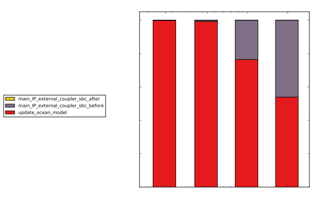

ACCESS-OM2 Performance Analysis
Marshall Ward
National Computational Infrastructure

Model parameters
- Resolution: 3600 x 2700 x 75 ("KDS")
- Timestep: 300 sec (288 / day)
- (Half of 600 sec target?)
- 10-day runtime
- CPU count:
- CICE: 1200
- MOM: 4358 (masked from 6000)
- MATM: 1
Main loop runtimes
| Component | Runtime (s) | Per step |
|---|---|---|
| ACCESS-OM2 | 2023.2 | 0.70 |
| MATM | ?? | ?? |
| CICE | 1673.3 | 0.58 |
| MOM | 1980.6 | 0.69 |
CICE load imbalance
CICE load imbalance
rank map here?Roundrobin distribution
Numbers here... Note major contributions by Nic and RussLand mask efficiency
| Block size | Ocean CPUs | Land ratio |
|---|---|---|
| 180 × 180 | 266 of 300 | 11.3% |
| 90 × 180 | 514 of 600 | 14.3% |
| 90 × 90 | 960 of 1200 | 20.0% |
| 45 × 90 | 1849 of 2400 | 23.0% |
| 45 × 45 | 3515 of 4800 | 26.8% |
| 1 × 1 | 6.1M of 9.7M | 37.4% |
CICE component runtime
MOM component runtime
Stability issues
Mid-run hangs: "Too many retries..."- OpenMPI 1.10.x
-mca pml yalla - OpenMPI 2.x
Requires rewrite of mpp_global_field(nearly complete)
Stability issues
Initialisation hangs- Two instances:
- OASIS:
MPI_Comm_split - MOM:
MPI_Comm_group
The investigation continues...
TODO
- Scale up the components
- Ice load balancing
- Smaller blocks, many blocks per rank
- Alternative distributions
- Season-dependent grids?
- ???